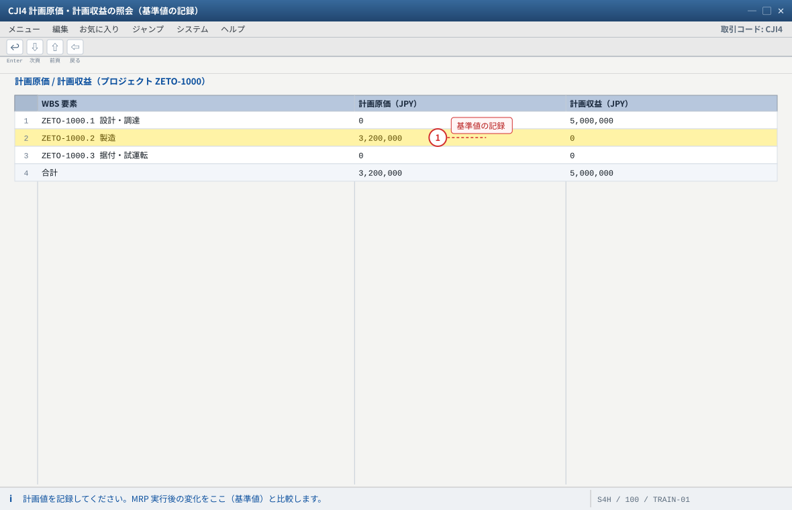
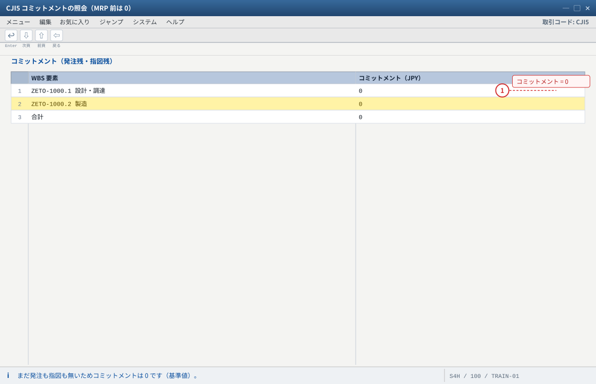
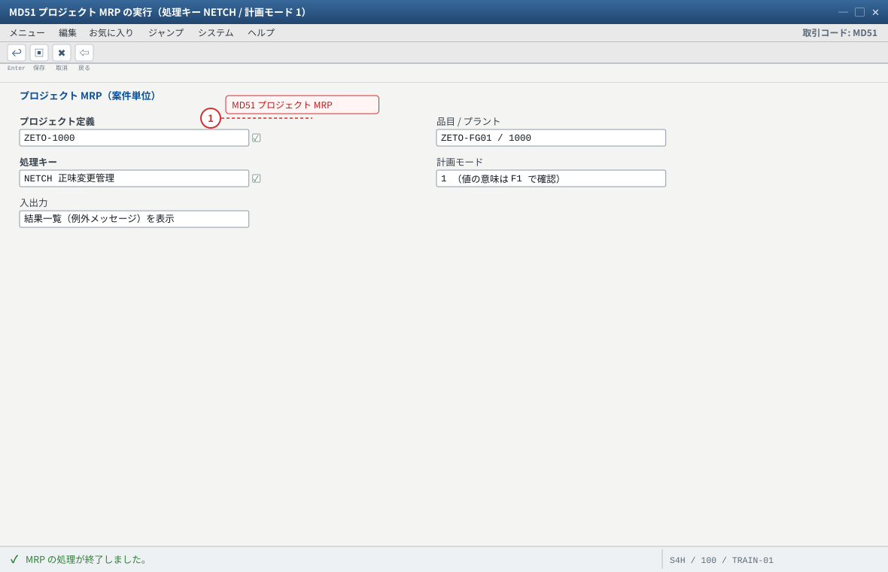
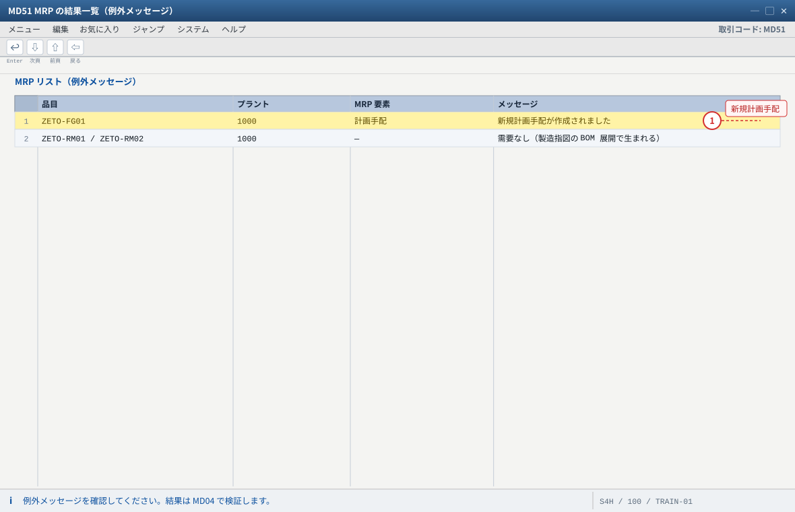
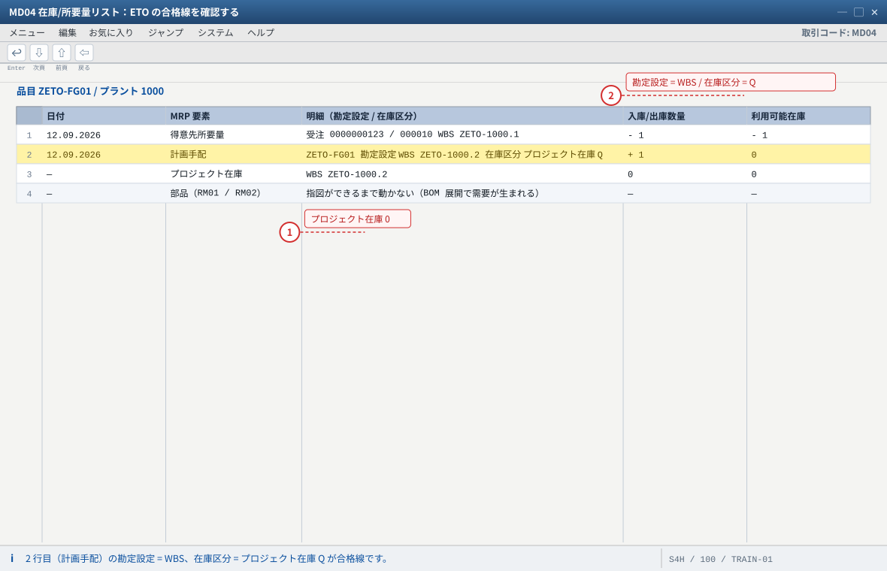
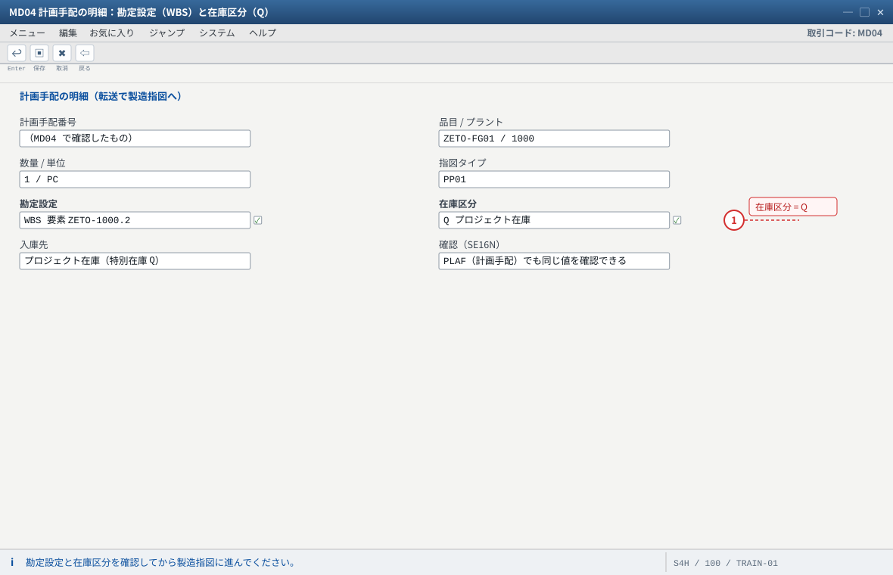
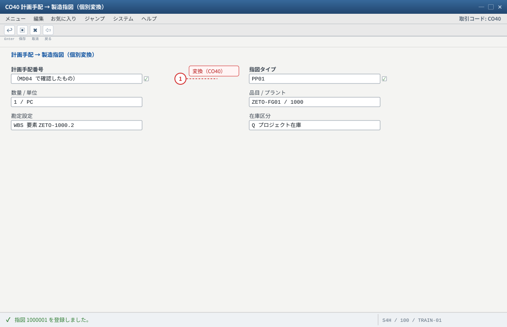
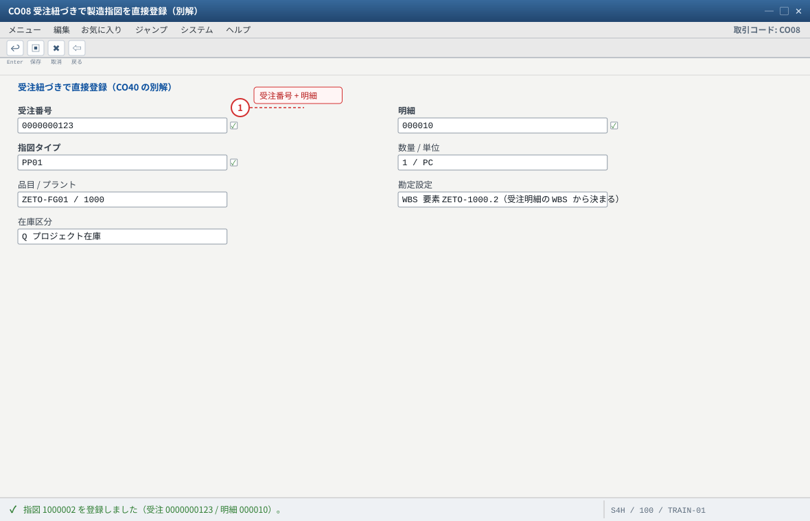
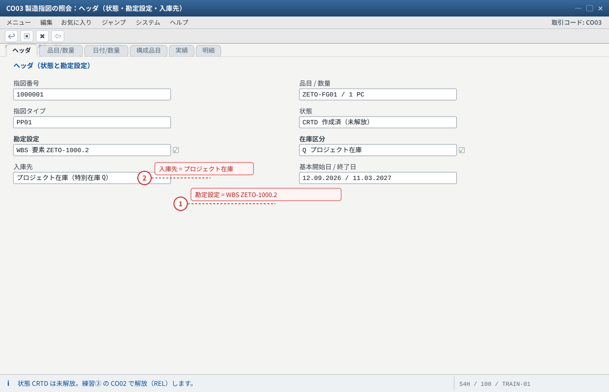
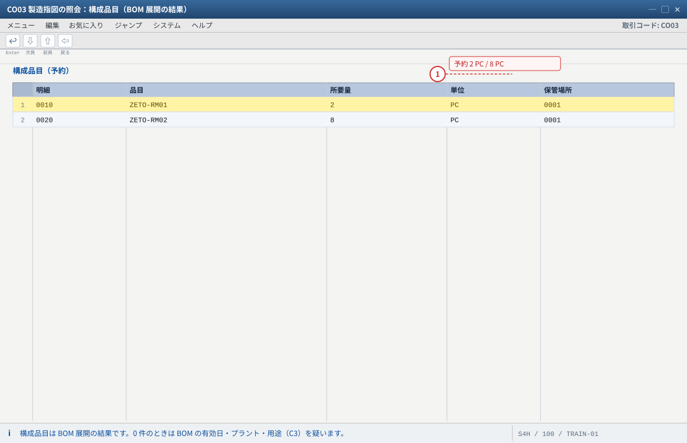

练习② 計画と MRP・製造指図
.png 放进 assets/gui/ 后执行 python3 tools/swap_gui_images.py <site> --apply 即可一键替换。MD51 为主）→ 确认計画手配の勘定設定 = WBS・在庫区分 = プロジェクト在庫 Q → 转成製造指図（WBS 参照・部品予約・入庫先 Q）→（発展）購買依頼を WBS で作る。
预计 75 分钟。CJI4
プロジェクト MRP
手配の勘定設定=WBS
製造指図
予約・入庫先 Q
WBS 付き購買依頼
2-1 計画と予算の再確認（CJI4 / CJI5 / CJ31）
CJI4（計画原価/収益）→ プロジェクトZETO-1000を指定 → WBS ごとの計画値を確認（.1収益 5,000,000 /.2原価 3,200,000）。CJI5（コミットメント）→ まだ 0（発注も指図も無いため）。CJ31（元予算）→ 予算と解放額を確認。

- 1 MRP の前に基準値を記録する。後で「何が作られ、何が消費されたか」を説明するため
自システムでの確認：CJI4 の列構成はレイアウトにより異なります。費目別の内訳が必要なら原価要素別の表示に切り替えてください。

- 1 発注すると予定額がここに現れる＝予算を先食いする。CJ31 の使用額と併せて見る
コミットメントは「発注したがまだ在庫・費用になっていない金額」です。段階的に増える様子を CJI5 → CJ31 で追いかけると可用性管理の意味が見えます。
2-2 MRP の実行（MD51：プロジェクト MRP）
输入值
MD51（プロジェクト MRP） 対象 : プロジェクト定義 ZETO-1000（WBS/ネットワーク単位で指定する画面構成の場合はその指定） 処理キー : NETCH（正味変更管理）など標準的な値 計画モード : 1（値の意味は F1 で確認） ※ 参考：MD50 = 受注単位の MRP、MD01N = 全体（MRP Live。MRP リストは作られない → MD04 で確認）
MD51→ プロジェクト（ZETO-1000）を指定 → 処理キーNETCH、計画モード1→ 実行。- 結果一覧で、例外的なメッセージ（新規計画手配など）を確認する。
- （代替）
MD50に受注番号を入れて受注単位で実行しても同じ需要が拾える。MD01N（プラント全体）でも構わないが、どの入口で回したかを必ず意識する。
MD01N）は MRP リストを作りません。結果は MD04、または Fiori の「在庫/所要量リスト」アプリで確認します（KBA 2640393 / Note 1914010）。
- 1 どの入口で回したかを必ず意識する（MD51＝案件単位、MD50＝受注単位、MD01N＝全体）
MRP Live（MD01N）は MRP リストを作りません。結果は MD04 または Fiori の「在庫/所要量リスト」アプリで確認します（KBA 2640393 / Note 1914010）。

- 1 ここで計画手配が出ない場合は、MRP タイプ・手配タイプ・ロットサイズ（MM03 の MRP1）を確認する
需要があるのに手配が出ないときは、MRP タイプ PD / 手配タイプ E / ロットサイズ EX（C2 の設定）を見直してください。
2-3 計画手配の確認（MD04）——勘定設定と在庫区分が命
MD04→ 品目ZETO-FG01/ プラント1000。
※「プロジェクト/WBS 別」の表示やMD4C（受注レポート）も併用すると見やすい。- 对照下表确认（第 2、3 行是 ETO 的合格线）：
| MD04 の行 | MRP 実行後の期待値 | 意味 |
|---|---|---|
| 得意先所要量（受注 0000…/000010） | −1 PC（WBS ZETO-1000.1 付き） | 受注の需要がプロジェクトに帰属している |
| 計画手配 | +1 PC、勘定設定 = WBS ZETO-1000.2、在庫区分 = プロジェクト在庫（Q） | ETO 成立の証拠。MTO ならここが受注在庫 E になる |
| プロジェクト在庫 | 0 PC | まだ入庫していない（练习③ で 1 式） |
| 部品（RM01/RM02） | 指図ができるまで動かない | 部品需要は指図の BOM 展開で生まれる |
- 計画手配を選択 → 「明細」で 勘定設定（WBS） と 在庫区分（Q） を確認。
SE16N: PLAFでも確認可。 - 勘定設定が空 / 在庫区分が自由在庫の場合の切り分け：
① 受注明細の WBS が入っているか（VA03）
② 品目 MRP4 が個別所要量のみか（MM03）
③ 戦略グループが Q 系の所要量タイプを指しているか（OVZG）
④ プロジェクト定義の評価付プロジェクト在庫が ON か（CJ20N）

- 1 3 行目が 0 なのは正常（練習③ の 101 入庫で 1 式になる）
- 2 勘定設定が空／在庫区分が自由在庫なら、① 受注明細の WBS ② MRP4 の個別所要量 ③ 戦略グループ ④ 評価付在庫の 4 点を切り分ける
MD4C（受注レポート）や「プロジェクト/WBS 別」の表示も併用すると見やすくなります。表なら PLAF を SE16N で確認します。

- 1 ここが自由在庫／空のまま指図にすると、101 入庫も自由在庫に入ってしまう
自システムでの確認：表で裏を取るなら PLAF（計画手配）を SE16N で参照し、勘定設定（WBS）と在庫区分の項目を確認します。
2-4 製造指図の登録（CO40 / CO08）
| 方法 | 事务码 | 要点 |
|---|---|---|
| 計画手配 → 指図（個別変換） | CO40（または MD04 から変換） | 計画手配の勘定設定（WBS）と在庫区分（Q）を引き継ぐ |
| 受注紐づきで直接登録 | CO08 | 受注番号＋明細を指定。WBS は受注明細から決まる |
CO40→ 計画手配番号（MD04で確認したもの）を入力 → 指図タイプ（PP01）・数量 1 を確認 → 「指図登録」→ 指図番号を記録。- （別解）
CO08→ 受注番号／明細000010→ 指図タイプPP01・数量 1 → 登録。 - どちらでも構いませんが、练习中はどちらで作ったかを記録してください（片方だけだと差異の原因が追えない）。

- 1 計画手配の勘定設定（WBS）と在庫区分（Q）を引き継ぐのがこのトランザクションの役割
どの入口で作ったか（CO40 / CO08 / MD04 からの変換）を必ず記録してください。片方だけだと差異の原因が追えません。

- 1 受注を起点にすると、WBS は受注明細から自動的に決まる（明細の WBS が前提）
CO40 と CO08 はどちらでも構いませんが、練習中はどちらで作ったかを記録します。CO08 で WBS が決まらない場合は受注明細の WBS（練習① の 1-5）を確認してください。
2-5 製造指図の確認（CO03）
CO03→ 指図番号 → 「ヘッダ」：品目ZETO-FG01・数量 1・状態 CRTD（未解放）、そして 勘定設定 = WBSZETO-1000.2（AUFK-PS_PSP_PNR）。- 「構成品目」：
ZETO-RM012 PC・ZETO-RM028 PC の予約があること（BOM 展開の結果）。 - 入庫予定（または明細）：入庫先 = プロジェクト在庫 Q、WBS
ZETO-1000.2であること。 - 「状態」：CRTD → 练习③ で解放（REL）する。
CO03 で確認）。
- 1 勘定設定が WBS であること＝指図の原価が WBS に集まる前提（空なら計画手配からの変換で落ちている）
- 2 入庫先がプロジェクト在庫 Q であること。自由在庫なら 101 入庫で Q にならない
自システムでの確認：勘定設定は表では AUFK-PS_PSP_PNR で確認できます（SE16N）。

- 1 ここに出た予約が、練習③ の 261 出庫（部品 2 / 8）の対象になる
構成品目が 0 件のときは CS03 で BOM を確認し、必要なら CO02 で構成品目を再展開します（表なら RESB）。
2-6 購買依頼（発展：外注・材料を WBS で手配）
ME51N（購買依頼） 品目・数量 : 任意（例：外注加工費 一式 800,000 JPY） 勘定設定 : 指図（F）または WBS（ZETO-1000.2）← ETO では WBS を入れる 購買発注 : ME59N（一括変換）または ME21N（手動） 入庫/請求 : MIGO（101）／MIRO（請求書照合）
ME51Nで購買依頼を作成し、勘定設定に WBS を指定する（品目は非在庫のサービス/費用でも可）。- 必要なら
ME21Nで発注まで進める。発注するとCJI5（コミットメント）に予定額が現れる＝予算を先食いする形になる（可用性管理の練習材料）。 - 確認：
CJI5（コミットメント）とCJ31（予算の使用額）を見る。
期待结果汇总（本练习做完）
| # | 确认项目 | 期待值 | 确认方法 |
|---|---|---|---|
| 1 | MRP 実行 | MD51（または MD50/MD01N）で処理完了、結果は MD04 で確認 | MD51/MD04 |
| 2 | 計画手配 | 1 PC・勘定設定 = WBS .2・在庫区分 = プロジェクト在庫 Q | MD04 明細 / SE16N: PLAF |
| 3 | 製造指図 | 1 件（PP01）・状態 CRTD・勘定設定 = WBS .2 | CO03 / SE16N: AUFK |
| 4 | 部品予約 | RM01 2 PC / RM02 8 PC | CO03 構成品目 / SE16N: RESB |
| 5 | 入庫予定 | 1 式 → プロジェクト在庫 Q（WBS .2） | CO03 |
| 6 | （発展）購買依頼 | 勘定設定 = WBS、CJI5 にコミットメント | ME51N/CJI5 |
つまずきと対処（本练习版）
| 症状 | 最可能的根因 | 确认 / 対処 |
|---|---|---|
| MD04 に需要が出ない | 受注明細に WBS が無い／所要量転送 OFF／戦略グループ未設定 | VA03 明細の WBS、明細カテゴリ、MM03 MRP3 を順に確認 |
| 需要はあるが計画手配が出ない | MRP タイプ ND/空白、手配タイプ空白、ロットサイズ | MM03 MRP1（PD / E / EX） |
| 計画手配の勘定設定が空 | 受注明細の WBS 未入力 or 需要が WBS に帰属していない | 练习① の 1-5 に戻る（受注明細の WBS） |
| 在庫区分が自由在庫（Q でない） | MRP4 が集合所要量／戦略グループが Q を指していない／評価付フラグ OFF | C2・C9・C10 の 4 点セットを総点検 |
| CO40 で「計画手配が指図に変換できない」 | 計画手配が他で処理済み／指図タイプ不正／勘定設定の不備 | MD04 の最新状態を再確認。CO08 で作り直すのも可 |
| 指図の構成品目が 0 件 | BOM の有効日・プラント・用途不一致 | CS03 で確認。必要なら CO02 → 構成品目の再展開 |
| ME51N で勘定設定に WBS が入らない | プロジェクト未解放／WBS が勘定設定要素でない | CJ20N でステータスとフラグを確認 |
验收（完成基准）
CJI4/CJ31で計画・予算の基準値を記録した。MD51（またはMD50/MD01N）を実行し、MD04で結果を確認した。- 計画手配の勘定設定 = WBS・在庫区分 = プロジェクト在庫 Q を確認した。
- 計画手配を製造指図へ変換し（または
CO08で登録）、CO03で勘定設定・構成品目・入庫予定を確認した。 - （発展）
ME51Nで WBS 付きの購買依頼を作成し、CJI5にコミットメントが出ることを確認した（または省略理由を説明）。
MD50 と MD51 の違いを実機で比較する（同じ需要を別の入口で拾えるか）。② 計画手配を削除してからもう一度 MRP を実行し、再生成されることを確認（ネットチェンジの意味）。
③ 部品（RM01）の MRP タイプを
PD・手配タイプ F にして購買依頼まで流してみる（発展 2-6 と組み合わせ）。